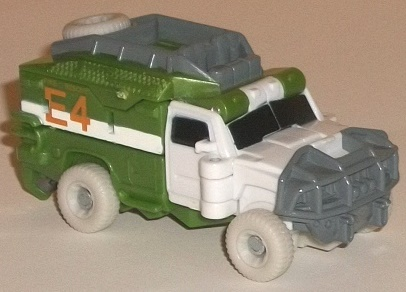
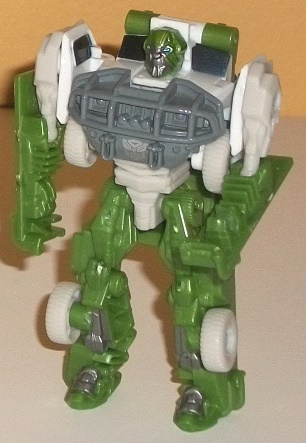
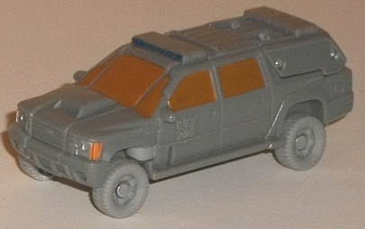
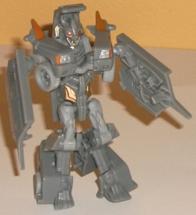
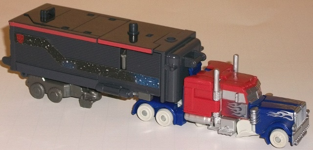
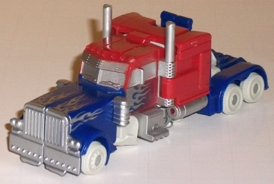
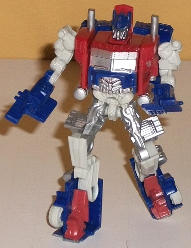
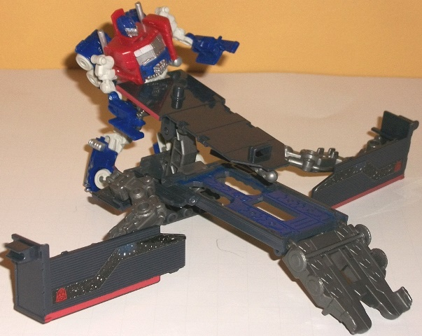
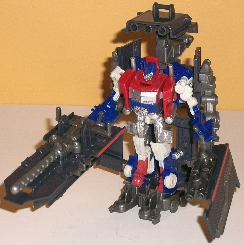

"Battle
in the Moonlight" set (Wal-Mart Exclusive)
"Battle
in the Moonlight" set (Wal-Mart Exclusive)
Set Price
: $20 (U.S.)
(NOTE: Because this set is composed of repaints,
this is not a full-blown review. This mainly covers any changes made to
the set and the color scheme, and merely compares it to the original versions
of these molds. For a review on the original DotM legion Ratchet toy, go
here
.
For a review on the original DotM legion Crankcase toy, go
here
.
For a review on the Optimus Prime w/ Armored Weapons Platform set, go
here
.)
Autobot
Ratchet


Allegiance
: Autobot
Size
: Legion
Difficulty of Transformation
: Very
Easy
Color Scheme
: Dark forest green,
white, gray, and some dirty off-white, black, metallic gunmetal gray, dark
metallic silvery blue, and pumpkin orange
Individual Rating
: 7.5
Ratchet's whole color
scheme isn't changed, though it's a pretty significant "variant", I suppose
you could say, when compared to this mold's solo release. Ratchet still
has the white plastic up front, and the dull orange "E4" signs on the sides
of his vehicle mode, as well as the same metallic gunmetal gray paint apps
on some of his robot bits and dark metallic blue for his eyes. The most
obvious change to this version is that his light green has been changed
to a darker forest green; this, to me, is a positive change, as the forest
green really pops against the white better than the lighter shade did.
His grill and part of his roof are painted a medium gray, his windows are
now black, and his tires and waist are now an off-white shade that looks
like it could glow in the dark (but doesn't). All of these changes, when
seen together, make this Ratchet redeco look quite a bit like the original
color scheme under a moon-lit night sky-- which, given the title of this
boxset, is surely what Hasbro was going for. I will say that although I'm
a fan of the other color changes (as they help increase the contrast between
the colors a bit), I'm not a huge fan of the shade of off-white used for
his wheels and waist. It's just an ugly shade of the color, and if it doesn't
glow in the dark, I don't see the purpose of it, here.
No mold changes have
been made to this version of Ratchet.
Autobot Ratchet Tech Specs:
Strength: 4.0
Intelligence: 9.0
Speed: 6.0
Endurance: 9.0
Rank: 5.0
Courage: 10.0
Fireblast: 3.0
Skill: 10.0
Crankcase


Allegiance
: Decepticon
Size
: Legion
Difficulty of Transformation
: Very
Easy
Color Scheme
: Moderately light gray,
metallic dull orange, and some light gray, silver, pale metallic bronze,
dark metallic blue, and red
Individual Rating
: 5.2
You know what this movie
line needs? More gray. (Yes, that was sarcastic.) Crankcase's main change
here is, obviously, that his black plastic has been replaced with a moderately
light shade of gray plastic. By itself, it's an incredibly boring choice,
especially since one of his secondary colors (used mostly for his wheels
and upper robot legs) is a slightly lighter shade of gray. That means there's
waaay too much gray on this guy. That said, Crankcase does have some paint
apps that pop a bit against it all-- his metallic orange windows in vehicle
mode really help a lot in this respect, along with having his headlights
painted both silver and orange and the front of his siren painted a dark
metallic blue. There's some other minor paint apps that are more visible
in robot mode-- namely some bronze on his waist and some nicely-detailed
silver and red on his jaw and eyes. Although these latter paint apps are
neat colors, there isn't nearly enough of them to keep away from all the
gray-ness that is Crankcase's robot mode. Although I get why this whole
scheme was done-- it does, like Ratchet, look sort of like Crankcase's
original color scheme under the light of a full moon-- it just looks too
boring otherwise, orange windows aside. This is my least favorite release
of this mold.
No mold changes have
been made to this version of Crankcase.
Crankcase Tech Specs:
Strength: 8.0
Intelligence: 7.0
Speed: 6.0
Endurance: 8.0
Rank: 8.0
Courage: 6.0
Fireblast: 4.0
Skill: 9.0
Optimus
Prime



Allegiance
: Autobot
Size
: Cyberverse Vehicle Set
Difficulty of Transformation of Robot
:
Easy
Difficulty of Transformation of Base:
Medium
Color Scheme
: Dark blue, dull pale
red, glittery milky gray, dark bluish gray, dirty off-white, and some silver
and dark metallic silvery blue
Figure Rating
: 8.9
Base Rating
: 4.0


For the most part, Optimus
Prime and his trailer/base have the same general "theme" as the other figures
in this set-- it looks like Prime's normal colors under moonlight. The
gray used for his trailer is of a considerably darker, bluish shade, with
some dull glittery gray used for most of the "inner" parts of the trailer/base,
which is actually a fairly good shade of the color as it looks semi-metallic.
The dark blue used for parts of both his trailer and his "core" vehicle/robot
is a particularly eye-catching shade-- I can't quite put my finger on what
it is about this shade, exactly, but it looks b-e-yootiful. Prime's red
is a bit of a pale red-- again, tying in with the "moonlight" theme-- and
most of his wheels and some of his robot bits are in the same "faux glow-in-the-dark"
dirty off-white color that Ratchet also has. Prime's typical "flame" paint
apps are done up in a silver paint, like they're "reflecting" the moonlight.
The silver goes particuarly well with the blue, though then again
pretty much every color here does. Although the trailer colors are admittedly
a bit on the boring side, due to such a large portion of it being various
shades of gray, there are some nice "night sky starlight" stickers that
are on each side of said trailer, occupying the same diagonal stripe that
traditionally is painted on G1 Prime's trailer. It's a really nice little
effect that adds to the theme all the more. The only part where this version
of Prime DOESN'T go with the "moonlight" theme is on the core figure, where
his blue and red plastic is (more or less) switched. This is likely just
to make Prime look a bit more different from all the other version of this
mold out there without changing his main colors, but it looks really nice,
having the center red and the surrounding parts that awesome blue, contrasting
so nicely against the off-white parts. I honestly like the way it all comes
together more than any other release of this mold.
No mold changes have
been made to this version of Optimus Prime & his Armored Weapons Platform.
Optimus Prime Tech Specs:
Strength: 10.0
Intelligence: 10.0
Speed: 7.0
Endurance: 10.0
Rank: 10.0
Courage: 10.0
Fireblast: 10.0
Skill: 9.0
The "Battle in the Moonlight"
set is a rather nice "themed" pack, with each character mostly colored
like they would be if their regular colors were seen under a full moon
at night. It's a pretty neat idea that ties into the title of the movie
in an obvious manner, and at only $20 U.S., you're basically getting one
of the Legion-class figures free. I think Crankcase is a bit of a stinker
(both in terms of the mold and the color scheme), but if you don't have
any versions of these molds, this is an easily recommended pick-up. If
you DO have previous releases of these molds and don't mind repaints, I'd
still consider it based on the price and how cool Ratchet's and Prime's
color schemes look.
"Battle in the Moonlight" Bio:
Optimus Prime and Autobot Ratchet drive
side-by-side down a dark, deserted street while Crankcase lurks in the
shadows nearby. The Decepticon is vastly outgunned. He dare not attack
the mighty Autobots alone. His job is simply to observe and report. The
Autobots are nearly out of view when Optimus Prime slams on his brakes--
his nasal sensors catch a whiff of Decepticon exhaust... The street erupts
as the Autobots spot Crankcase and open fire!
Reviews by Beastbot
Back to Transformers:
Dark of the Moon Index